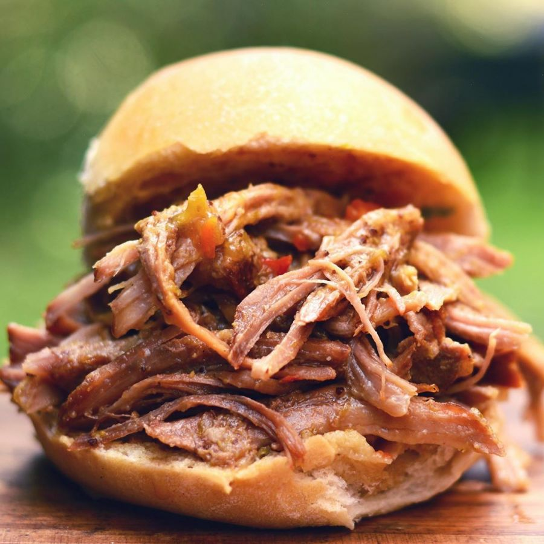

Bondiola Braseada

Bondiola de cerdo jugosa y tierna
Lista para servirlo en una fuente y que los comensales se preparen su Dip.
Plato infaltable en tu cena navideña.
Ingredientes:
- Bondiola de cerdo
- Cerveza negra
- Cebolla
- Morron
- Apio
- Ajo
- Berenjena
Procedimiento:
- Sellar la bondiola por todos sus lados en una sarten.
- Saltear levemente los vegetales.
- Agregar la cerveza a los vegetales y cocinar para evaporar el aclohol.
- Colocar en una fuente para horno la bondiola junto a los vegetales y la salsa de cerveza.
- Hornear durante 3 hs a fuego bajo.
- Desmechar la bondiola y mezclar con el caldo restante